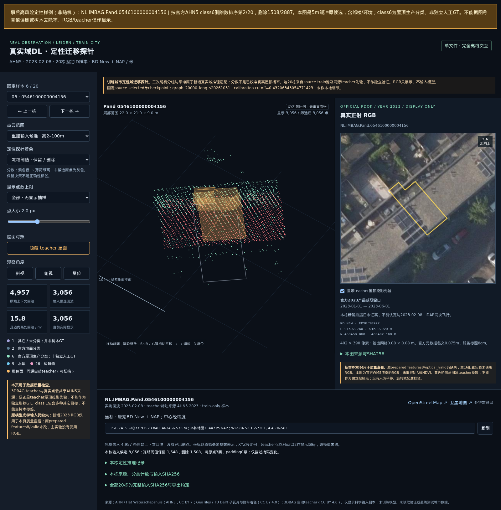

受控重建结果与真实点云风险，一起看
训练教师建筑 20,000 栋，16 种首轮配置、26 次训练；10 个源城市，2 个新测试城市。原生测试为 19 条流程 × 200 栋 × 12 个条件。不是 45,600 栋独立建筑。
主实验使用自动 3DBAG 教师及模拟点云，输入是点云特征。另附的真实 AHN5＋RGB 只做定性检查；本轮没有训练 NAIP＋3DEP 光学融合模型，也没有证明美国地区精度。
raw 为 1.0940 m，限幅损失降低 53.2%。包含原生失败、LoD1 与缺覆盖的 10m 罚分，不能解读为成功屋顶 MAE。
目标足迹内，官方屋顶生产分类 class6 的 37,199 条逐栋记录中删除 3,492 条。这是模型行为，不能称独立真值误删率。
通过本轮新城市门槛。真实探针仍存在屋面支持损失风险，当前证据不足以推荐真实点云部署或大范围生产。
哪种模型被选中，怎样比较
源验证预选 graph_20000_long，部署固定 graph_20000_long_s20261031。在打开新城市测试之前固定权重、阈值和方法；没有挑选测试最好的 seed。规模/控制方案各复验 3 个种子，概率集成是额外推理预算的次要比较。
固定部署流程：clean 损伤超过 2cm 的建筑 0/200，新增原生失败 0，原生 LoD2 生成 2369/2400。原生 LoD2 标记不等于水密性或完整几何有效性认证。
平均改善不保证每个遮挡案例都改善。 固定部署模型的最大单条件损伤为 +2.603m（NL.IMBAG.Pand.0014100010904342，occlusion_heavy；raw 1.624m → 模型 4.227m），完整报告展示这个事后选择的失败样例。
增加规模和长训相邻对照的平均差仅约 0.6–1.9mm；独立复算的报告性配对区间均包含0。不能把相对 raw 的 53.2% 改善解释成增加数据或长训的收益。这些额外报告性区间不属于原预注册比较，仅针对固定两城市、150个邻接组和已训练模型，不用于选型。
注意力、多尺度、法线/残差辅助目标、密度增强和一致性等模块在固定 50 栋、首个种子的筛选中没有达到预设改善要求，因此未进入额外组合。不能据此说这些模块普遍无效或已经充分多种子验证。
真实点云的负面证据
20 栋都是源训练城市中的教师建筑 ID，不是独立真实验证集。真实候选含 5m 缓冲及邻楼，而模拟观测位于本栋足迹内；随机分组、地面定义和点密度也不同。足迹内仍删掉 3,492 条 class6 记录，不能把风险全部归因于邻楼。
AHN 官方说明明确 AHN5 class6 仅对应屋顶；这增加了屋面支持点损失的担忧，但生产分类与同源教师仍不是独立人工真值。class1 是其它/未分类，不能作为树木真值。当前数据不能判定单一失效原因。
下面是事后选择的高风险样例 4156：按 class6 删除绝对数排第 2，共删 1508/2887；其中目标足迹内为 471/933。示例非随机，不代表全部 20 栋。红色表示删除，绿色表示保留；RGB 和同源教师只用于查看。

下一轮最值得检验的方向
- 先匹配真实输入，再评价 DL。 配对检验足迹内/含邻楼、空间分组/随机分组和地面定义；建立与目标地区点密度、噪声、遮挡相符的训练观测，并补充独立人工检查。上述差异是待检验因素，当前没有单一因素的因果证据。
- 从删点升级为保留屋面支持、联合建模屋面结构。 尝试建筑条件化的点分类与屋面平面/结构预测，约束不能任意删空某个屋面。固定部署测试中，缺覆盖罚分占损失约 25.6%，very_sparse 条件贡献约 39.9%，说明仅删树点不能恢复已经缺失的几何；具体新方法仍待实验。
- 再检验光学与点云融合的增益。 用配准后的影像帮助判断树冠与多高度屋面，点云约束真实几何，并保留影像遮挡或过期时的可靠性判断。本轮 RGB 只用于预览，尚无融合增益或新颖性证明。